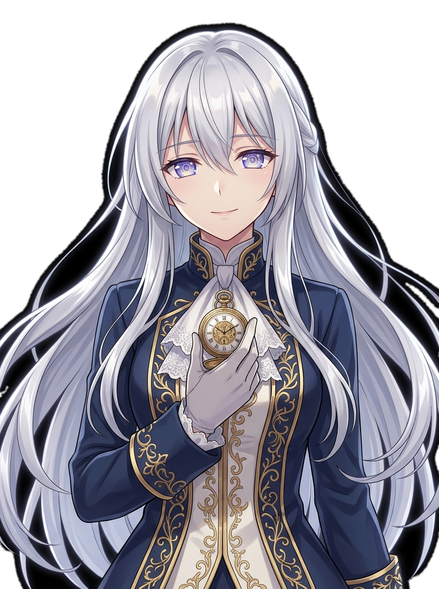

DIVERGENCE
0.041829%
성도 에텔가르드 · 상공 관측역
셀레스티아 공명 50%
이졸데 인연 50%
D-72:00:00
NEXT
⌚
❖ LAPLACE WORLDLINE OBSERVATION CHOICE ❖
─── ❖ ───
프롤로그 : 백색 낙하의 밤
THE NIGHT OF THE WHITE FALL
CHRONOS-ARIA ENGINE · ORIGINAL AAA LIGHT NOVEL
창백한 별의 레퀴엠
제0시계탑의 관측자 — The Last Astral Record
